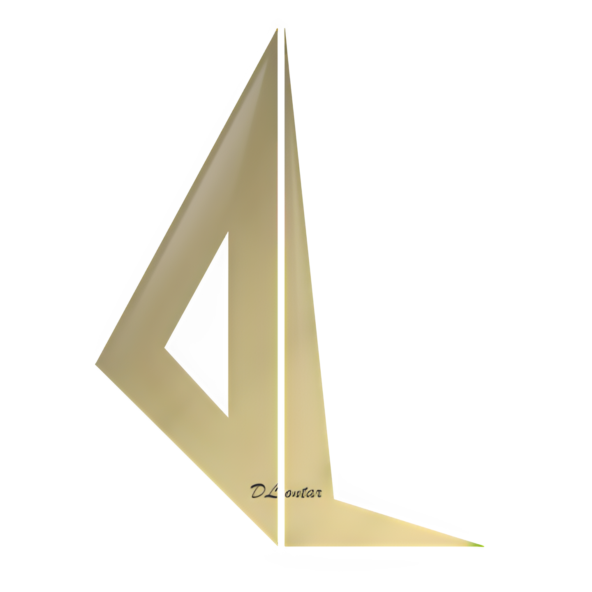

BAB II
"Sejarah Perusahaan"
Reality. PT. Digital Lontar Virtual Reality merupakan salah satu badan usaha milik Negara yang bergerak dalam bidang jasa telekomunikasi untuk umum dalam negeri dan pengembangan Software dan teknologi terbaru terutama Virtual Reality dan Augmented Reality I Wayan Lovayana Founder & CEO (Chief Executive Officer) I Made Ochlan Pramana Putra Founder & CTO (Chief Technology Officer) dari PT Digital Lontar Nusantara dan team ke 3 kami yaitu I Wayan Darya Kartika sebagai CMO (Chief Marketing Officer) Kami membangun PT Digital Lontar melihat keresahan yg terjadi dg pembelajaran sejarah yg membosankan tidak begitu diminati masyarakat dan museum” di Bali yg sepi seperti museum Margarana dan museum subak di Tabanan yg dibilang jadi museum hantu. Apalagi kita ketahuan di zaman sekarang Kita melihat bahwa isu” penting Yang harusnya menjadi focus Kita adalah persatuan dan kesatuan bangsa, dan persatuan dan kesatuan bangsa tidak akan terwujud kalau Kita melupakan sejarah bagaimana para pahlawan dan bagaimana terbentuknya bangsa ini, bagaimana jiwa patriotisme para pahlawan Yang hidup untuk mempertahankan persatuan dan kesatuan Nusantara baik dari zaman kerajaan maupun saat mempertahankan kemerdekaan dari para penjajah. Namun zaman sekarang generasi muda khususnya merasa Bosan belajar sejarah dan tidak begitu tertarik untuk belajar sejarah apalagi ke museum untuk lebih memahami langsung dengan bukti” sejarah yang ada. Jadi dibutuhkan sebuah inovasi khusus untuk membuat generasi muda tertarik belajar sejarah. Namun disisi lain : Kemajuan teknologi yang serba digital memberikan banyak pengaruh dalam perubahan global, seperti perkembangan teknologi Virtual Reality yang dapat memberikan kita sebuah experience nyata tentang kejadian atau dunia yang belum pernah kita rasakan atau kunjungi sebelumnya. Dan dengan teknologi VR (Virtual Reality) bisa menjadi media untuk mempromosikan sebuah produk/tempat wisata dengan cara yang baru, melestarikan kearifan lokal dengan cara yang menarik, serta belajar dengan cara yang lebih menyenangkan.
"Visi dan misi nama perusahaan"
- Visi
Menjadi perusahaan yang mengangkat nilai-nilai, sejarah, seni, budaya, cerita dan segala bentuk kearifan lokal serta filosofi warisan leluhur Nusantara agar tetap dilestarikan, dan hidup sebagai jati diri bangsa dengan dukungan dari inovasi dan teknologi terbaru.
- Misi
1. Meningkatkan jiwa patriotisme seluruh masyarakat Indonesia yang diwariskan para pahlawan dan leluhur bangsa Indonesia. ( Smart learning)
2. Membangun brand tempat-tempat bersejarah, benda-benda warisan leluhur, seni dan budaya kearifan lokal agar menjadi lebih dipahami dan dihargai dengan bantuan inovasi teknologi. (Smart Branding)
3. Mengadaptasikan nilai seni, budaya, sejarah dan legenda warisan leluhur dengan perkembangan teknologi terbaru untuk diinovasikan menjadi sebuah produk atau karya yang bermanfaat bagi kemakmuran dan kelestarian masyarakat. (Smart economy)
"Logo Perusahaan"
- Arti logo
Huruf “D” yang ditulis terbalik bermaksud, dibalik yang kita nikmati sekarang, dahulu ada perjuangan para pahlawan dan huruf “D” kepanjangan dari Digital, karena dlontar bergerak dibidang digital, kemudian diikuti dengan huruf “L” yang berarti Lontar atau sejarah, serta warna emas yang berarti pemimpin yang dimaksud disini ialah menjadi yang terdepan dibidang teknologi dan sumber ilmu pengetahuan baik itu sejarah budaya seni sehingga tujuan D'Lontar adalah mendigitalisasi mengadaptasi berbagai budaya atau kearifan local bali maupun nusantara
"Struktur organisasi"
- Deskripsi tugas
1. I Wayan Lovayana, S.E, M.M. : memastikan seluruh devisi bekerja dengan baik sesuai aturan yang berlaku
2. I.W Darya Kartika, S.Pi, M.Si. : Divisi promosi dan event menciptakan traffic untuk data tentang tahoma dan bermain VR (Virtual Reality) mengadakan kerja sama dengan lembaga komunitas
3. I.M Ochlan Pramana Putra, S.T. : Divisi operasional memelihara dan merawat peralatan device virtual reality
4. Luh Diah Rosa Cahayantari : Divisi promosi dan brand ambassador, memelihara dan meng-update sosial media tahoma cafe dan dlontar nusantara. Mengurus endorsment
5. Muhammad Rasyid : membuat karakter inovasi sesuai dengan permintaan memberikan texture visual effect sound effect
6. Putu Mega Arista : Bertanggung jawab atas penjualan vr secara penuh baik rental vr kerumah ,Melakukan kegiatan marketing disekitar tahoma vr ,Membuat iklan dalam bentuk video atau foto yang terkait dengan informasi reality
"Produk PT. Digital Lontar Nusantara"
- Barang